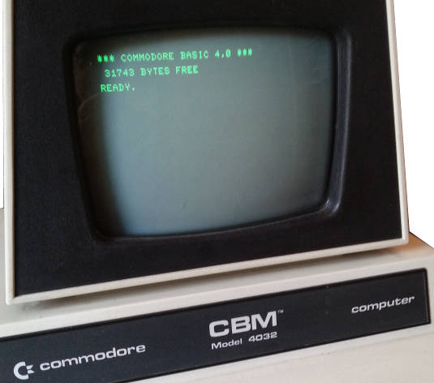
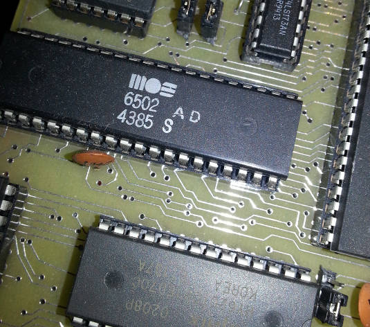
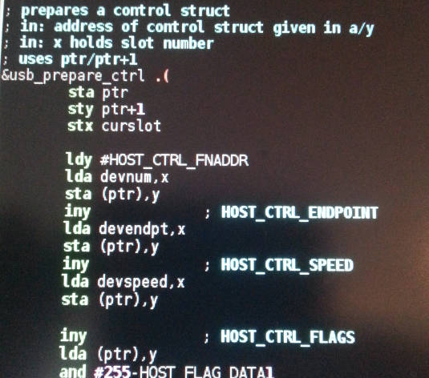

André's 8-bit pages
(C)
1989-2026 André Fachat
On these pages you will find quite some information concerning
8-bit computers of the 6502 line.
2026-01-06
Added a whole new page on the PET video output architecture on the petindex pages.
2026-01-05
Created a separate page for BDOS, my solution to copy files to and from PC disks with a C128 and a 1571 disk drive.
2024-09-21
Updated the Ulti-PET page to the current state - the prototype Ulti-PET machine!
Updated the GeckOS page to its current version 2.2.
2026-01-05
Greatly updated the links on PET replicas and emulators.
2024-10-30
Update on the Ulti-PET page.
2024-02-06
Updated the GeckOS page to its current version 2.1.1.
2024-02-03
Updated the Ulti-PET page (also renamed "Ultimate PET" to "UltiPET", to avoid confusion with the Ultimate projects by Gideon.
Added the CS/A IEC and UART board.
2023-12-13
Added a CSA SID board, as well as links to Ultra-CPU and Ultra-Bus boards to the CS/A page.
2023-08-27
Added an alternative definition of the CS/A bus with a shorter connector and only 48 signals.
2023-07-23
Added some links on the PET index pages
2023-01-08
Introduced The Ultimate PET.

A list of hardware
information and links to the old CBM PET machines
Various CBM hardware projects, like
SCSI interface, or a project to build
Your own new PET 4032.
Other items are C64 kernel mods and
IEEE488 interfaces, including
one for the PC to use it as disk drive.
A 65816 replacement and accelerator board for a 6502, as tested in CBM PETs and my CS/A
A firmware and server to use an embedded device as disk drive for the Commodore (PET as well as C64 and others), with the help of a PC serving files or internet connections.

and
Micro-PET are my new
PET replicas, with an FPGA for colour VGA video output, up to 13.5MHz speed, USB and SD-card support and much more!
and
Gecko are my selfdesigned and selfbuilt
multi- resp. singleboard 6502 computers.
The CS/A65 features virtual memory, video card, a SCSI interface
and many more stuff.
is there for projects that go beyond the original 6502 design.
It currently contains the
PET816 board
that speeds up a 1 MHz PET up to 10 MHz!
This page will also be the home for the future
65k project.
Information on various
items and standards used in these pages. Examples are
CRTC and
74ls610 MMU info, and information about
the
SCSI and
I2C standards.
Miscellaneous hardware stuff.
Currently contains a
Logic Probe.

A small 6502 multitasking operating
system that runs on the Commodore C64 and PET computers, as well as my
selfbuilt 6502s.
is an attempt in defining a C-like standard library for 6502 assemblers. It is used in GeckOS/A65.
fileformat is a flexible relocatable 6502/65816 fileformat.
I wrote with relation
to the 6502. Features cross assembler, C64 basic extension, etc.
All Copyrights are acknowledged.
The information here is provided under the terms of the
GNU Public License version 2 unless noted otherwise.
Last modified:
2026-01-06